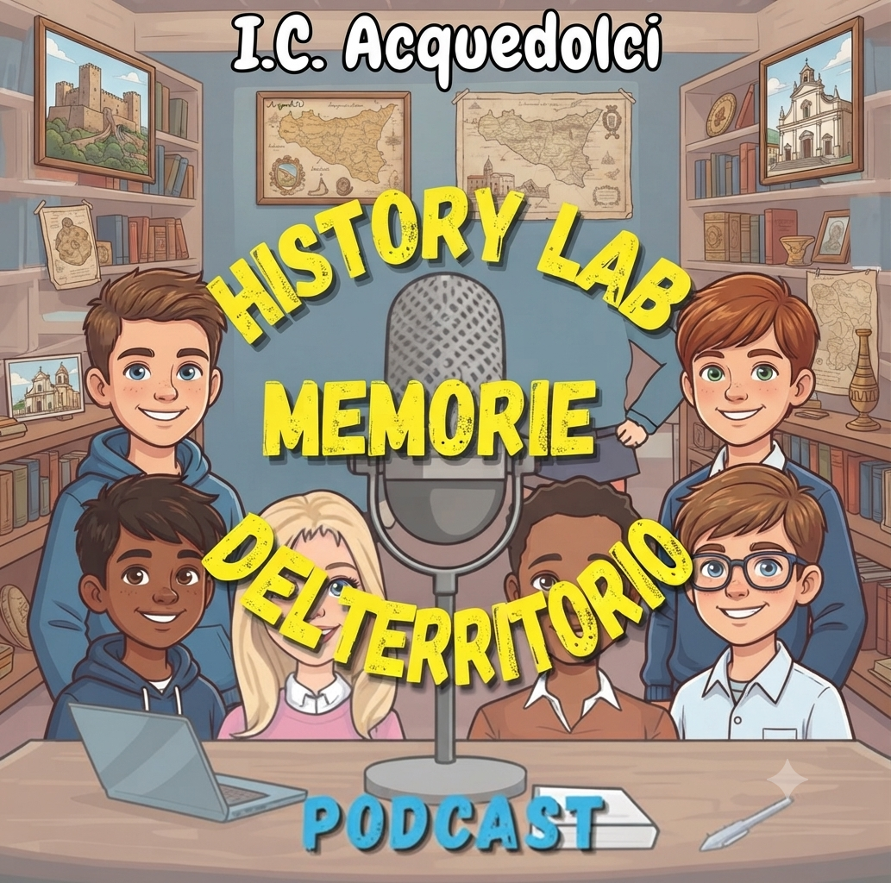

Istituto Comprensivo Acquedolci
Memorie del Territorio
Le voci del territorio
Gli studenti raccontano storia, archeologia e scoperte
La puntata
Una puntata unica e corale, realizzata dagli studenti dell'Istituto Comprensivo Acquedolci: i ragazzi di Acquedolci e San Fratello raccontano i luoghi del territorio, le scoperte e cosa significa per loro il proprio paese. Verrà pubblicata su Spotify.

Una puntata corale: i ragazzi di Acquedolci e San Fratello si presentano in gallo-italico e raccontano i luoghi del territorio, le scoperte e cosa significa per loro il proprio paese.